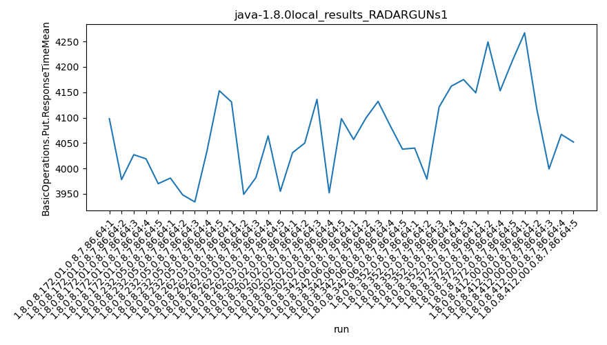
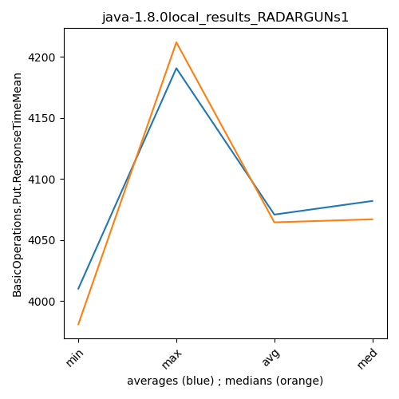

java-1.8.0 RADARGUNs1
Context at bottom
/home/jvanek/git/benchmarks-in-nested-virtualisation-toolchain/final_results/local_results/local_results_J2DBENCH
java-1.8.0
RADARGUNs1
/home/jvanek/git/benchmarks-in-nested-virtualisation-toolchain/final_results/local_results/local_results_SPECJBB
java-1.8.0
RADARGUNs1
/home/jvanek/git/benchmarks-in-nested-virtualisation-toolchain/final_results/local_results/local_results_RADARGUNs1
java-1.8.0
RADARGUNs1
local_results_RADARGUNs1
- local_results_RADARGUNs1 - throughput get
- local_results_RADARGUNs1 - throughput put
- local_results_RADARGUNs1 - response mean time get
- local_results_RADARGUNs1 - response mean time put
local_results_RADARGUNs1 - throughput get
Expected number of java-1.8.0 JDKs: 10
1st avgmed_alljdks_metric:
/home/jvanek/git/benchmarks-in-nested-virtualisation-toolchain/final_results/result_processing.py /home/jvanek/git/benchmarks-in-nested-virtualisation-toolchain/final_results/local_results/local_results_RADARGUNs1 BasicOperations.Get.Throughput= False
values: [2923879, 2759139, 2901308, 3073927, 3108316, 3136807, 2971183, 3088055, 2834805, 3103744, 2846702, 2888759, 2941242, 2955666, 2979687, 3258495, 3272450, 2899416, 3028734, 3171715, 3173582, 3057807, 3237837, 3224131, 3269163, 3181661, 3294459, 3246675, 3222663, 3177262, 2794153, 3020976, 3229649, 2910026, 3213561, 3240966, 2976776, 3154108, 3028812]

Expected number of iterations: 5
final number of values: 39 out of 50
Pass rate: 78.0%
values: (2759139, 3294459, 3071751.1794871795, 3088055)

** accuracy from all jdks and runs
more is better
MIN: 2759139
MAX: 3294459
AVG: 3071751.1794871795
MED: 3088055
Relative differences 1:
MIN-MAX: 16.0 %
MIN-AVG: 10.0 %
MIN-MED: 11.0 %
MAX-MIN: -19.0 %
MAX-AVG: -7.0 %
MAX-MED: -7.0 %
AVG-MED: 1.0 %
stored to java-1.8.0.properties. sort | uniq that!
2nd avgmed_by_jdk_metric:
values: [2953313.8, 3026918.8, 2922411.2, 3126162.0, 3192504.0, 3224544.0, 2988701.0, 3122844.6]

values: [2923879, 3088055, 2941242, 3171715, 3224131, 3222663, 3020976, 3154108]

values: (2922411.2, 3224544.0, 3069674.925, 3122844.6)
values: (2923879, 3224131, 3093346.125, 3154108)

** accuracy from all jdks where runs were avged
more is better
MIN: 2922411.2
MAX: 3224544.0
AVG: 3069674.925
MED: 3122844.6
Relative differences 1:
MIN-MAX: 9.0 %
MIN-AVG: 5.0 %
MIN-MED: 6.0 %
MAX-MIN: -10.0 %
MAX-AVG: -5.0 %
MAX-MED: -3.0 %
AVG-MED: 2.0 %
stored to java-1.8.0.properties. sort | uniq that!
** accuracy from all jdks where runs were medianed
more is better
MIN: 2923879
MAX: 3224131
AVG: 3093346.125
MED: 3154108
Relative differences 1:
MIN-MAX: 9.0 %
MIN-AVG: 5.0 %
MIN-MED: 7.0 %
MAX-MIN: -10.0 %
MAX-AVG: -4.0 %
MAX-MED: -2.0 %
AVG-MED: 2.0 %
stored to java-1.8.0.properties. sort | uniq that!
local_results_RADARGUNs1 - throughput put
Expected number of java-1.8.0 JDKs: 10
1st avgmed_alljdks_metric:
/home/jvanek/git/benchmarks-in-nested-virtualisation-toolchain/final_results/result_processing.py /home/jvanek/git/benchmarks-in-nested-virtualisation-toolchain/final_results/local_results/local_results_RADARGUNs1 BasicOperations.Put.Throughput= False
values: [730968, 689797, 725329, 768474, 777103, 784193, 742726, 772049, 708701, 775970, 711723, 722266, 735328, 738894, 744929, 814574, 818065, 724802, 757200, 792972, 793416, 764409, 809458, 806079, 817255, 795363, 823633, 811655, 805698, 794350, 698527, 755267, 807401, 727540, 803423, 810324, 744171, 788542, 757161]

Expected number of iterations: 5
final number of values: 39 out of 50
Pass rate: 78.0%
values: (689797, 823633, 767941.9230769231, 772049)

** accuracy from all jdks and runs
more is better
MIN: 689797
MAX: 823633
AVG: 767941.9230769231
MED: 772049
Relative differences 1:
MIN-MAX: 16.0 %
MIN-AVG: 10.0 %
MIN-MED: 11.0 %
MAX-MIN: -19.0 %
MAX-AVG: -7.0 %
MAX-MED: -7.0 %
AVG-MED: 1.0 %
stored to java-1.8.0.properties. sort | uniq that!
2nd avgmed_by_jdk_metric:
values: [738334.2, 756727.8, 730628.0, 781522.6, 798123.4, 806139.8, 747183.75, 780724.2]

values: [730968, 772049, 735328, 792972, 806079, 805698, 755267, 788542]

values: (730628.0, 806139.8, 767422.96875, 780724.2)
values: (730968, 806079, 773362.875, 788542)

** accuracy from all jdks where runs were avged
more is better
MIN: 730628.0
MAX: 806139.8
AVG: 767422.96875
MED: 780724.2
Relative differences 1:
MIN-MAX: 9.0 %
MIN-AVG: 5.0 %
MIN-MED: 6.0 %
MAX-MIN: -10.0 %
MAX-AVG: -5.0 %
MAX-MED: -3.0 %
AVG-MED: 2.0 %
stored to java-1.8.0.properties. sort | uniq that!
** accuracy from all jdks where runs were medianed
more is better
MIN: 730968
MAX: 806079
AVG: 773362.875
MED: 788542
Relative differences 1:
MIN-MAX: 9.0 %
MIN-AVG: 5.0 %
MIN-MED: 7.0 %
MAX-MIN: -10.0 %
MAX-AVG: -4.0 %
MAX-MED: -2.0 %
AVG-MED: 2.0 %
stored to java-1.8.0.properties. sort | uniq that!
local_results_RADARGUNs1 - response mean time get
Expected number of java-1.8.0 JDKs: 10
1st avgmed_alljdks_metric:
/home/jvanek/git/benchmarks-in-nested-virtualisation-toolchain/final_results/result_processing.py /home/jvanek/git/benchmarks-in-nested-virtualisation-toolchain/final_results/local_results/local_results_RADARGUNs1 BasicOperations.Get.ResponseTimeMean True
values: [1162, 1071, 1123, 1124, 1090, 1100, 1090, 1239, 1150, 1157, 1121, 1094, 1098, 1245, 1163, 1149, 1121, 1113, 1192, 1201, 1227, 1187, 1165, 1185, 1163, 1239, 1104, 1112, 1154, 1142, 1137, 1134, 1128, 1325, 1123, 1111, 1267, 1140, 1107]
Expected number of iterations: 5
final number of values: 39 out of 50
Pass rate: 78.0%
values: (1071, 1325, 1152.6410256410256, 1140)

** accuracy from all jdks and runs
more is worse
MIN: 1325
MAX: 1071
AVG: 1152.6410256410256
MED: 1140
Relative differences 1:
MIN-MAX: 24.0 %
MIN-AVG: 15.0 %
MIN-MED: 16.0 %
MAX-MIN: -19.0 %
MAX-AVG: -7.0 %
MAX-MED: -6.0 %
AVG-MED: 1.0 %
stored to java-1.8.0.properties. sort | uniq that!
2nd avgmed_by_jdk_metric:
values: [1114.0, 1147.2, 1144.2, 1155.2, 1185.4, 1150.2, 1181.0, 1149.6]

values: [1123, 1150, 1121, 1149, 1185, 1142, 1137, 1123]

values: (1114.0, 1185.4, 1153.35, 1150.2)
values: (1121, 1185, 1141.25, 1142)

** accuracy from all jdks where runs were avged
more is worse
MIN: 1185.4
MAX: 1114.0
AVG: 1153.35
MED: 1150.2
Relative differences 1:
MIN-MAX: 6.0 %
MIN-AVG: 3.0 %
MIN-MED: 3.0 %
MAX-MIN: -6.0 %
MAX-AVG: -3.0 %
MAX-MED: -3.0 %
AVG-MED: 0.0 %
stored to java-1.8.0.properties. sort | uniq that!
** accuracy from all jdks where runs were medianed
more is worse
MIN: 1185
MAX: 1121
AVG: 1141.25
MED: 1142
Relative differences 1:
MIN-MAX: 6.0 %
MIN-AVG: 4.0 %
MIN-MED: 4.0 %
MAX-MIN: -5.0 %
MAX-AVG: -2.0 %
MAX-MED: -2.0 %
AVG-MED: -0.0 %
stored to java-1.8.0.properties. sort | uniq that!
local_results_RADARGUNs1 - response mean time put
Expected number of java-1.8.0 JDKs: 10
1st avgmed_alljdks_metric:
/home/jvanek/git/benchmarks-in-nested-virtualisation-toolchain/final_results/result_processing.py /home/jvanek/git/benchmarks-in-nested-virtualisation-toolchain/final_results/local_results/local_results_RADARGUNs1 BasicOperations.Put.ResponseTimeMean True
values: [4098, 3978, 4027, 4019, 3970, 3981, 3948, 3934, 4035, 4153, 4131, 3949, 3982, 4064, 3955, 4031, 4050, 4136, 3952, 4098, 4057, 4099, 4132, 4084, 4038, 4040, 3979, 4121, 4162, 4175, 4149, 4249, 4153, 4212, 4267, 4117, 3999, 4067, 4052]

Expected number of iterations: 5
final number of values: 39 out of 50
Pass rate: 78.0%
values: (3934, 4267, 4067.769230769231, 4057)

** accuracy from all jdks and runs
more is worse
MIN: 4267
MAX: 3934
AVG: 4067.769230769231
MED: 4057
Relative differences 1:
MIN-MAX: 8.0 %
MIN-AVG: 5.0 %
MIN-MED: 5.0 %
MAX-MIN: -8.0 %
MAX-AVG: -3.0 %
MAX-MED: -3.0 %
AVG-MED: 0.0 %
stored to java-1.8.0.properties. sort | uniq that!
2nd avgmed_by_jdk_metric:
values: [4018.4, 4010.2, 4016.2, 4053.4, 4082.0, 4095.4, 4190.75, 4100.4]

values: [4019, 3981, 3982, 4050, 4084, 4121, 4212, 4067]

values: (4010.2, 4190.75, 4070.84375, 4082.0)
values: (3981, 4212, 4064.5, 4067)

** accuracy from all jdks where runs were avged
more is worse
MIN: 4190.75
MAX: 4010.2
AVG: 4070.84375
MED: 4082.0
Relative differences 1:
MIN-MAX: 5.0 %
MIN-AVG: 3.0 %
MIN-MED: 3.0 %
MAX-MIN: -4.0 %
MAX-AVG: -1.0 %
MAX-MED: -2.0 %
AVG-MED: -0.0 %
stored to java-1.8.0.properties. sort | uniq that!
** accuracy from all jdks where runs were medianed
more is worse
MIN: 4212
MAX: 3981
AVG: 4064.5
MED: 4067
Relative differences 1:
MIN-MAX: 6.0 %
MIN-AVG: 4.0 %
MIN-MED: 4.0 %
MAX-MIN: -5.0 %
MAX-AVG: -2.0 %
MAX-MED: -2.0 %
AVG-MED: -0.0 %
stored to java-1.8.0.properties. sort | uniq that!
/home/jvanek/git/benchmarks-in-nested-virtualisation-toolchain/final_results/local_results/local_results_RADARGUNs3
java-1.8.0
RADARGUNs1
/home/jvanek/git/benchmarks-in-nested-virtualisation-toolchain/final_results/local_results/local_results_JMH
java-1.8.0
RADARGUNs1
/home/jvanek/git/benchmarks-in-nested-virtualisation-toolchain/final_results/local_results/local_results_DACAPO
java-1.8.0
RADARGUNs1
pass rates:
local_results_RADARGUNs1=78.0%
Context:
- local_results
- RADARGUNs1